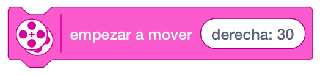

Los bloques de movimiento le permiten hacer funcionar dos motores en un movimiento sincronizado. Se utilizan principalmente para mover las bases de conducción o bases motrices. Solo motores del mismo tipo, por ejemplo dos motores medianos, se pueden sincronizar.
Nos permite mover un par de motores sincronizados hacia la dirección indicada, el número especificado, en la
dirección seleccionada
Utilizaremos el bloque Establecer motores de movimiento para que coincida con los puertos de su modelo que
están conectados a motores grandes. Los puertos predeterminados son B (izquierda) y C (derecha).
La velocidad de los motores se establece mediante el bloque de establecer velocidad de movimiento. La
velocidad predeterminada es del 75%.

Permite seleccionar si queremos avanzar o retroceder con nuestra base motriz.
Indicamos el número de unidades que queremos avanzar o retroceder.
Por último, la unidad del movimiento.
Empieza a mover un modelo hacia la dirección seleccionada hasta que se indica a los motores que hagan otra
cosa o el programa se detiene.
Utilizaremos el bloque Establecer motores de movimiento para que coincida con los puertos de su modelo que
están conectados a motores grandes. Los puertos predeterminados son B (izquierda) y C (derecha).
La velocidad de los motores se establece mediante el bloque de establecer velocidad de movimiento. La
velocidad predeterminada es del 75%.

Nos permite hacer las funciones de un volante.
Utiliza el bloque Establecer motores de movimiento para que coincida con los puertos de su modelo que están
conectados a motores grandes. Los puertos predeterminados son B (izquierda) y C (derecha).

Indicamos la dirección. Según giremos el volante, éste hará el giro indicado.

El giro de 100 o -100 es una rotación sobre el eje del robot, es decir que durante el giro este no se desplaza, en porcentajes inferiores hay desplazamiento.
Asignamos el número de unidades y el tipo de duración del movimiento.
Empieza a mover la base motriz en una dirección.
Utilizaremos el bloque Establecer motores de movimiento para que coincida con los puertos de su modelo que
están conectados a motores grandes. Los puertos predeterminados son B (izquierda) y C (derecha).
La velocidad de los motores se establece mediante el bloque de establecer velocidad de movimiento. La
velocidad predeterminada es del 75%.

Indicamos la dirección. Según giremos el volante, éste hará el giro indicado.
Detiene todo movimiento.

Utiliza el bloque Establecer motores de movimiento para que coincida con los puertos de su modelo que están conectados a motores. Los puertos predeterminados son B (izquierda) y C (derecha).
Fija la velocidad de una base de conducción en movimiento. El rango de velocidad es -100 a 100. Los valores negativos cambian la dirección del movimiento. El valor predeterminado es 75%.

Establece los motores de movimiento para los bloques de movimiento.
El primer puerto especificado configura el motor izquierdo y el segundo puerto especificado configura el motor derecho. Los puertos predeterminados son B (izquierda) y C (derecha).


Mueve un modelo hacia adelante el número especificado de segundos, grados o rotaciones con la dirección
especificada.
Los valores de dirección más altos (es decir, +99 y -99) harán que la trayectoria del arco de la base de
conducción sea más nítida.
Utilizaremos un valor de "0" para conducir en línea recta. El uso de los valores 100 y -100 hará que la base
de conducción gire sobre sí misma.
Utilizaremos el bloque Establecer motores de movimiento para que coincida con los puertos de su modelo que
están conectados a motores grandes. Los puertos predeterminados son B (izquierda) y C (derecha).
La velocidad de los motores se establece mediante el Bloque de velocidad de movimiento establecida. La
velocidad predeterminada es del 50%.
Establece la acción que realizarán los motores de movimiento cuando se complete su comando actual. Se puede configurar para flotar o mantener activamente la posición actual cuando los motores se detienen.
Mueve un modelo el número especificado de segundos, grados o rotaciones a la velocidad especificada, con la
dirección especificada.
Utiliza el bloque Establecer motores de movimiento para que coincida con los puertos de su modelo que están
conectados a motores grandes. Los puertos predeterminados son B (izquierda) y C (derecha).
Los valores de dirección más altos (es decir, +99 y -99) harán que la trayectoria del arco de la base de
conducción sea más nítida.
Utiliza un valor de "0" para conducir en línea recta. El uso de los valores 100 y -100 hará que la base de
conducción gire sobre sí misma.
Mueve un modelo el número especificado de segundos, grados o rotaciones a la velocidad especificada para
cada motor.
El primer valor de velocidad establece la velocidad del motor izquierdo y el segundo valor de velocidad
establece la velocidad del motor derecho.
Utiliza el bloque Establecer motores de movimiento para que coincida con los puertos de su modelo que están
conectados a motores grandes. Los puertos predeterminados son B (izquierda) y C (derecha).
Empieza a mover un modelo a la velocidad especificada para cada motor hasta que se le dice a los motores que
hagan otra cosa o el programa se detiene.
El primer valor de velocidad establece la velocidad del motor izquierdo y el segundo valor de velocidad
establece la velocidad del motor derecho.
Utiliza el bloque Establecer motores de movimiento para que coincida con los puertos de su modelo que están
conectados a motores grandes. Los puertos predeterminados son B (izquierda) y C (derecha).